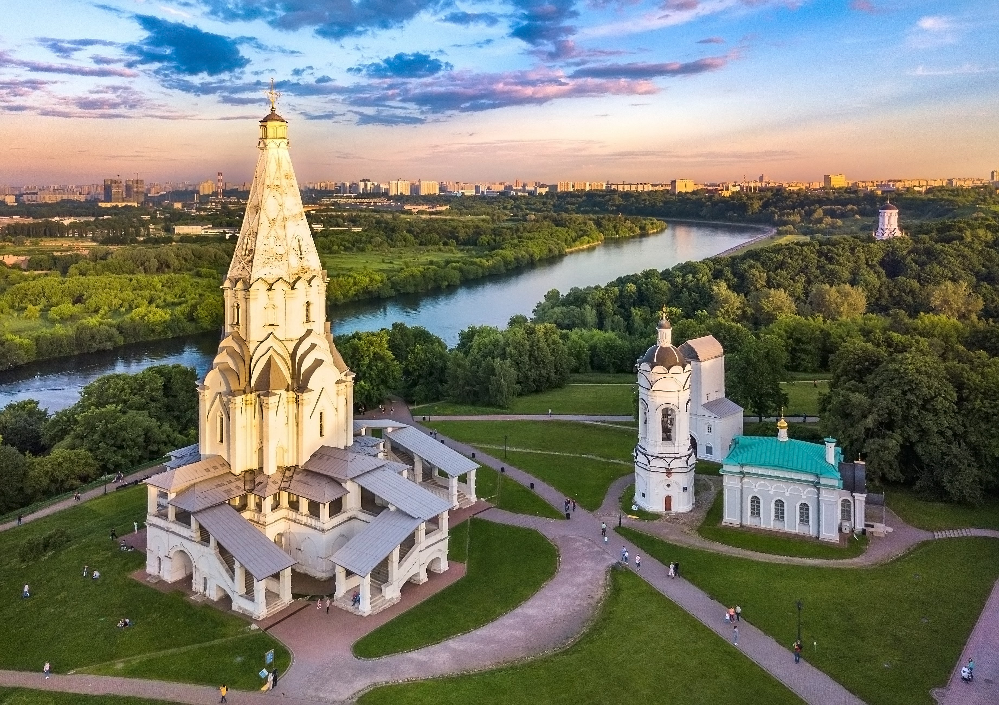
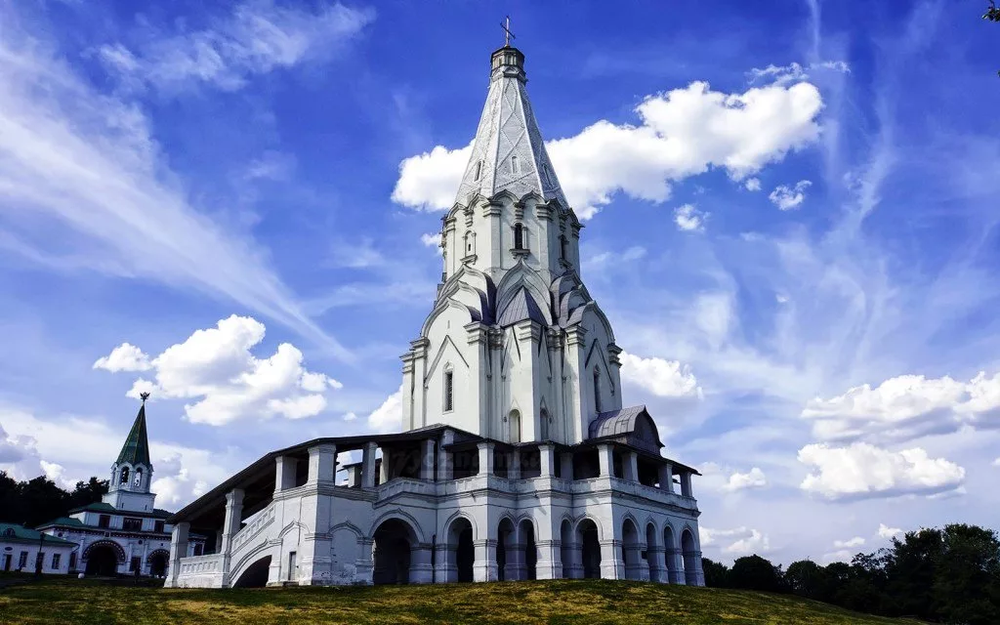

Коломенское: Историческая жемчужина
Коломенское — это историческая усадьба на юге Москвы, которая когда-то была царской резиденцией. Сегодня это музей-заповедник и популярное место для прогулок.
Я посетил Церковь Вознесения, построенную в 1532 году, которая является объектом ЮНЕСКО. Яблоневые сады и живописные виды на Москву-реку создают умиротворяющую атмосферу.
В Коломенском проходят исторические реконструкции и фестивали, а также есть музеи, где можно узнать о жизни русских царей.
Совет: Возьмите с собой еду для пикника и устройте отдых в садах, наслаждаясь природой!